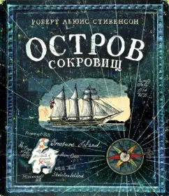

Приключения

Название: "Остров сокровищ"
Автор: Роберт Стивенсон
Описание: Классическая история про пиратов и поиски сокровищ. Книга рассказывает о молодом Джиме Хокинсе, который случайно становится участником опасного приключения.
Вместе с командой он отправляется на необитаемый остров, где сталкивается с предательством, сражениями и загадками старой карты.
Популярность: Более 10 миллионов проданных копий по всему миру.
Фантастика
Название: "Дюна"
Автор: Фрэнк Герберт
Описание: Эпическая сага о пустынной планете Арракис и борьбе за власть. Главный герой Пол Атрейдес сталкивается с интригами, войнами и мистическими силами.
Книга исследует темы политики, экологии и религии, создавая уникальный мир с богатой культурой.
Популярность: Более 20 миллионов копий и адаптация в виде популярного фильма.
Детектив
Название: "Убийство в Восточном экспрессе"
Автор: Агата Кристи
Описание: Загадочное убийство в поезде раскрывает Эркюль Пуаро. История начинается с обнаружения мертвого пассажира,
и знаменитый детектив начинает расследование, раскрывая сложную сеть лжи и мотивов. Книга полна неожиданных поворотов и мастерски построенного сюжета.
Популярность: Продано более 15 миллионов экземпляров и несколько экранизаций.